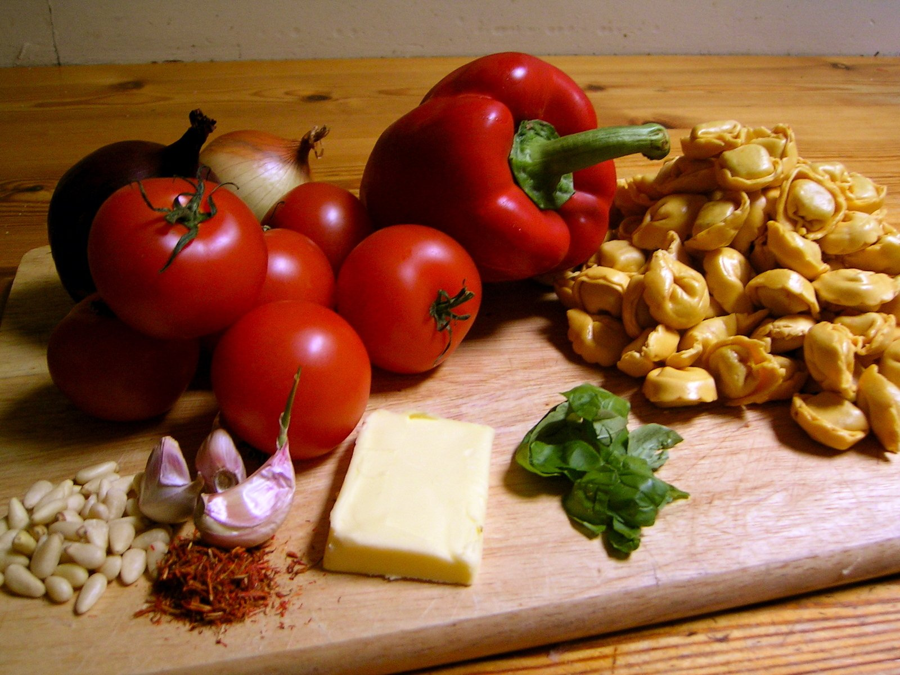
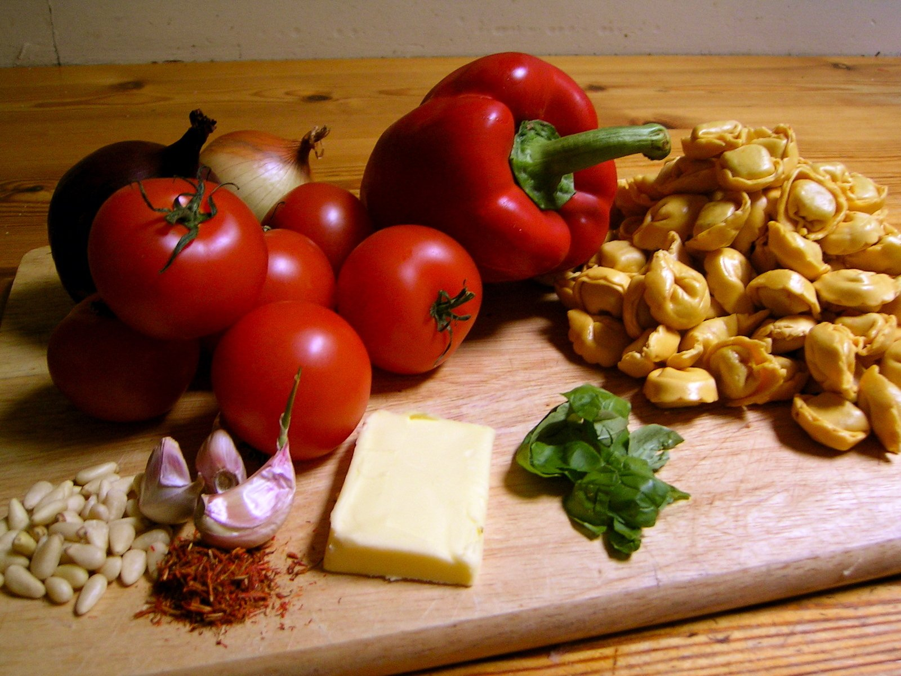
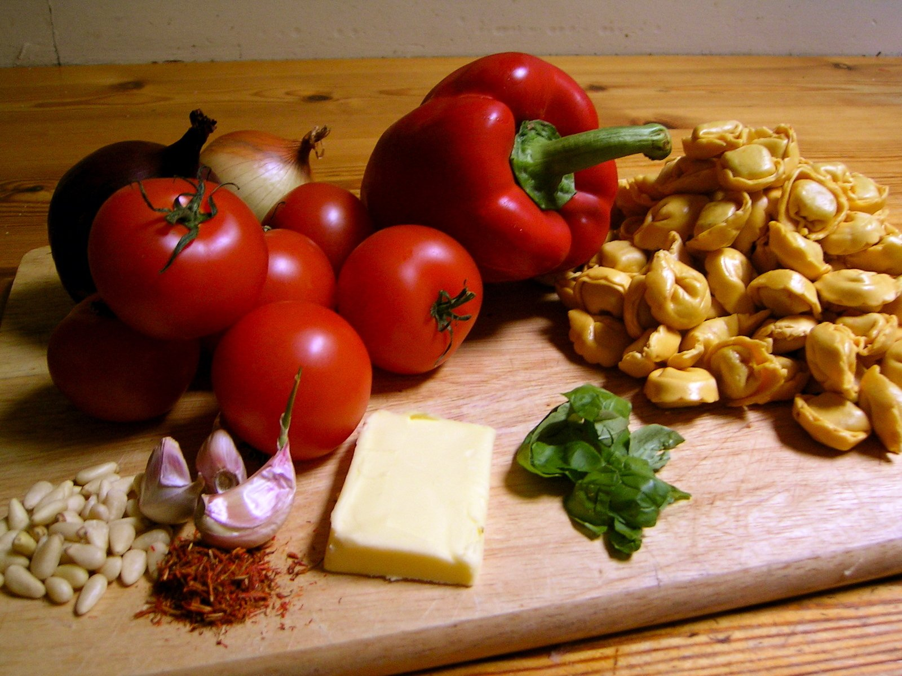
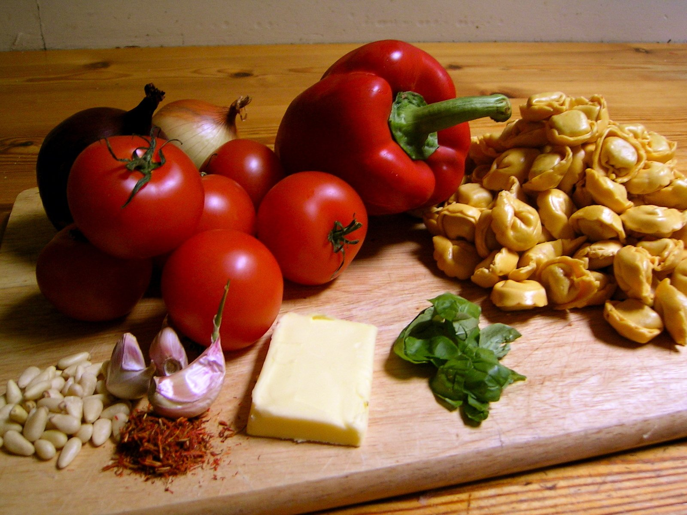
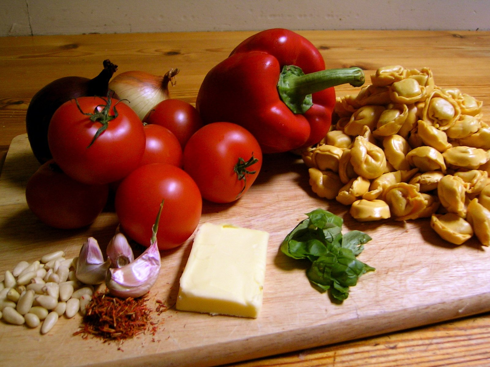

Home
Explore
Categories
Recipes
Profile
Login as user
Sign-up as user
Login as admin
Sign-up as admin
Welcome to Recipe Finder
Connect with other food enthusiasts and explore delicious recipes!



 


